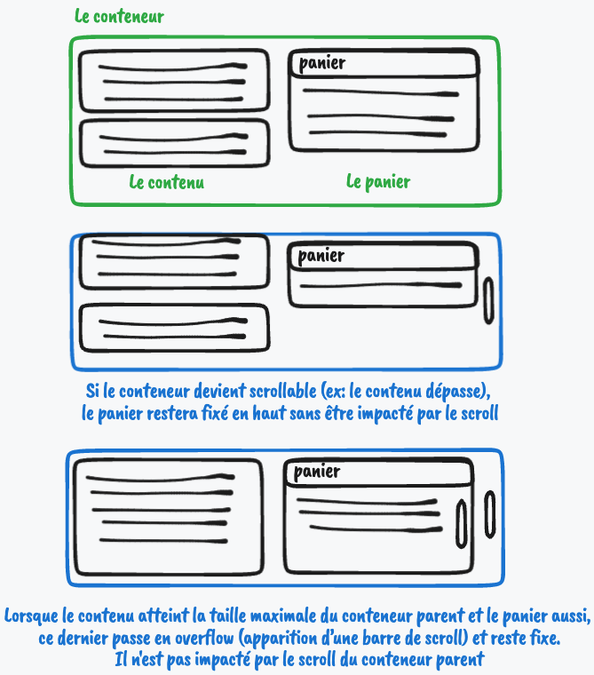

Un panier sticky
Cette recette a été publiée le
Cas d'usage étudié
Le panier répond aux critères suivants :
- Il doit être placé dans le corps du contenu
- Si le conteneur adjacent (ex: liste des éléments à ajouter au panier) atteint la taille maximale mais pas le panier, le panier restera en position fixe en haut du conteneur et ne sera pas impacté par le scroll du conteneur adjacent
- Lorsque le contenu adjacent atteint la taille maximale du conteneur parent (ou de la fenêtre) et le panier aussi, ce dernier passe en overflow (apparition d’une barre de scroll)

Solution proposée
La solution proposée peut être testée sur un codepen (bac à sable) : lien vers le codepen.
En quelques mots, ce qu'il faut retenir de cette implémentation
position: sticky
Cette propriété CSS va permettre de positionner l'élément auquel elle s'applique de manière... collante. Dans notre exemple, on va s'en servir afin de répondre à l'exigence suivante :
Le panier restera en position fixe en haut du conteneur et ne sera pas impacté par le scroll du conteneur adjacent
overflow: scroll
lorsque le panier atteint la taille de son conteneur parent, nous souhaitons qu'apparaisse une barre de défilement (ou scroll). La propriété overflow permet de spécifier le comportement en cas de dépassement du contenu dans son conteneur. La valeur scroll indique ici qu'une barre de défilement apparaîtra.
code HTML
<!doctype html>
<html lang="fr">
<head>
<meta charset="utf-8">
<title>Exemple de panier fixe</title>
</head>
<body>
<main>
<article> <!-- Conteneur adjacent -->
<p>...</p>
</article>
<aside> <!-- Panier -->
<h1>Panier</h1>
<article>
<p>...</p>
</article>
</aside>
</main>
</body>
</html>code CSS :
:root {
--space: 1rem;
}
* {
margin: 0;
}
main {
display: flex;
gap: 10px;
padding: var(--space);
}
main > article {
border: 3px solid black;
padding: 10px 20px;
/* raccourci pour flex-grow / flex-shrink / flex-basic */
flex: 1 1 0;
min-width: 40%;
}
aside { /* notre panier */
box-sizing: border-box;
border: 3px solid black;
padding: 10px 20px;
/* raccourci pour flex-grow / flex-shrink / flex-basic */
flex: 0 1 600px;
position: sticky;
top: var(--space);
bottom: var(--space);
height: 100%;
max-height: calc(100vh - 2 * var(--space));
overflow: scroll;
}Autres informations sur le code
Les customs properties
Dans le code vous pouvez voir la notation --space ainsi que var(--space).
Il s'agit de custom properties CSS, pouvant s'apparenter à des variables.
La propriété se définit avec --ma-propriété et s'utilise avec la notation var(--ma-propriété).
Box-sizing
La propriété CSS box-sizing indique comment seront calculées la hauteur et la largeur d'un élément en prenant en compte tous les éléments qui peuvent l'être: padding, margin, border-size.
box-sizing: border-box, dans notre exemple, indique qu'il faut prendre en compte la bordure et le remplissage dans la valeur définie pour la largeur et la hauteur.
Pourquoi cela est nécessaire: nous calculons la max-height, le top et le bottom en pixels afin de positionner le panier en haut du contenu parent et provoquer le scroll lorsque le panier atteint la taille de son parent. Si nous ne spécifions pas ce box-sizing, il nous faudra ajouter la largeur des borders ainsi que les paddings haut et bas du panier dans tous ces calculs.
Flex properties
Dans le code nous utilisons le layout flexbox pour positionner la liste des produits et le panier verticalement.
Nous souhaitons que le panier fasse 600px de large et que le contenu adjacent prenne le reste de la place allouée par la taille du parent.
Voici le détails de propriétés utilisées :
flex-basis
Cette propriété indique la taille initiale d'un contenu avant qu'il ne soit re-distribué via les autres propriétés flex (notamment le flex-grow, ci-dessous). Nous souhaitons que notre panier fasse 600px de large, pour cela la valeur est fixée à 600px. Nous attribuons ensuite une valeur à 0 pour la liste des produits pour indiquer que nous ne souhaitons pas définir de taille initiale.
flex-grow
Cette propriété indique le facteur d'expansion d'un élément, sous la forme d'une proportion comparative aux autres enfants de son parent. Si tous les enfants du parent ont une proportion de 1, ils prendront tous une portion égale du parent (100%/nb d'enfant). Si un de ces enfant a un facteur plus élevé il prendra une place plus importante.
Dans notre exemple, nous avons fixé une taille fixe de 600px au panier, et nous souhaitons que les autres enfants prennent la place restante quel que soit leur contenu. Pour cela, nous n'avons pas fixé le facteur d'expansion pour le panier (par défaut il est à 1) et l'avons fixé à 1 pour la liste des produits qui prendra donc la place restant.
Le fait de fixer le flex-grow du panneau gauche à 1 lui permet de prendre tout l'espace restant au sein du parent. Si nous l'avions fixé à 0 il aurait pris la taille minimale possible selon les autres critères: par exemple comme nous lui avons fixé un min-width à 40% il aurait pris cette valeur.